How to use the club app
Log results, look after your squad and share match cards. No technical knowledge needed.
The pictures show a made-up club called "Sample Town FC". Yours will show your own name, badge and colours. Red numbers on the pictures match the numbered steps.
Looking around
Anyone with the link can look around the app. The tabs at the bottom are:
- Home – the season record so far and the latest result.
- Results – every match. Use the drop-down at the top to show one competition, or search for an opponent to see your record against them.
- Gallery – match photos and YouTube videos. Use the All / Photos / Videos buttons at the top to filter. Tap a video to watch it on YouTube.
- Players – top scorers, man of the match awards and each player's record. Tap a tab at the top (marked 1) to switch between them.
- Admin – the padlock. Only people with the PIN can get past it.
The season shown at the top (for example 2026/27) can be changed to look back at earlier seasons.
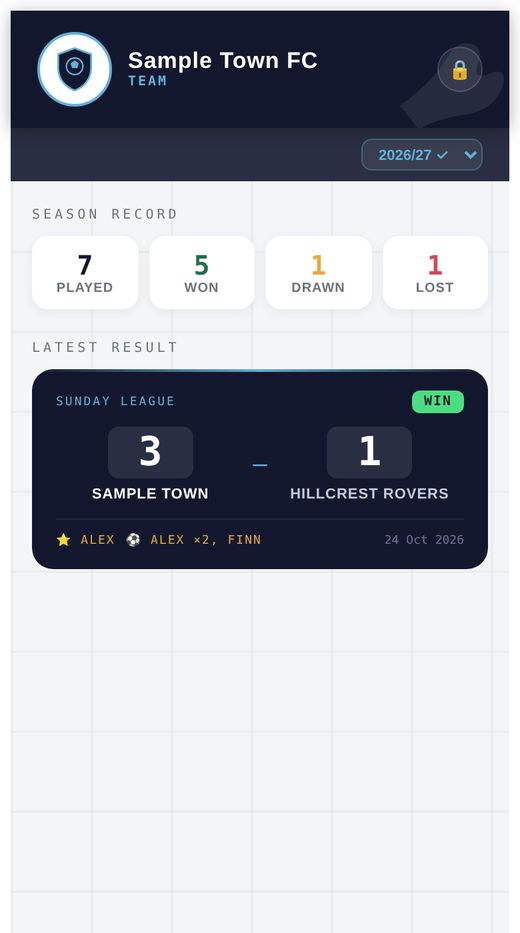
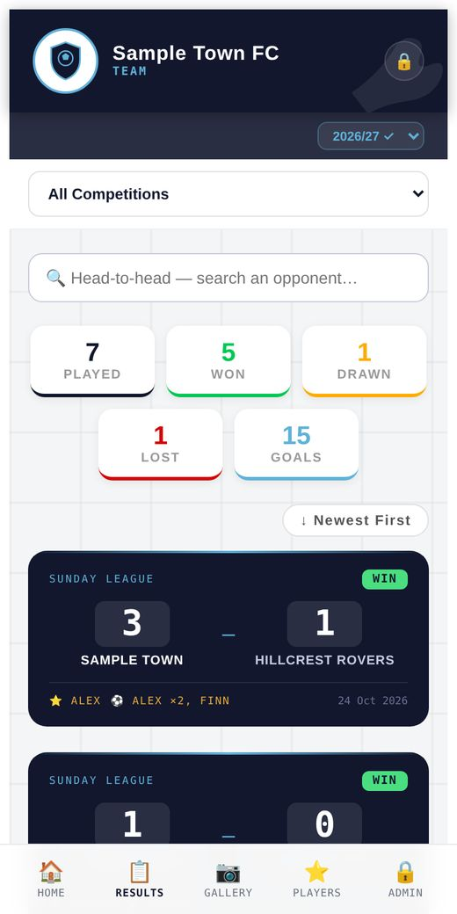
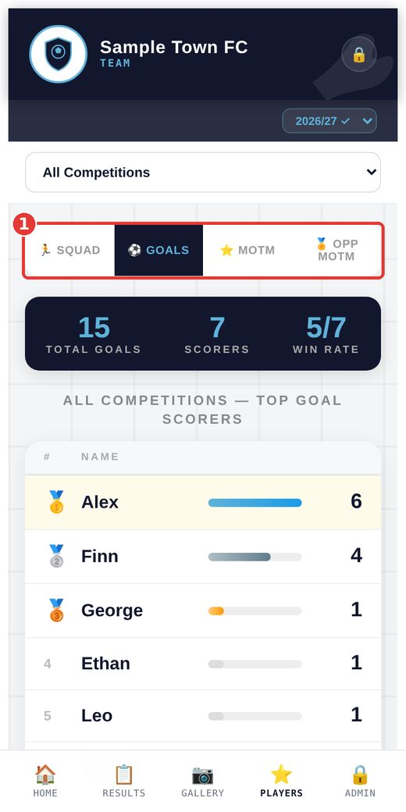
Unlock the Staff Room
Anything that changes the app (results, players, teams) is in the Staff Room.
- Tap the padlock at the top right of any screen.
- Type your PIN and tap Unlock.
- You'll see the Staff Room menu. Tap what you want to do.
- When you've finished, scroll to the bottom of the menu and tap Exit Admin.

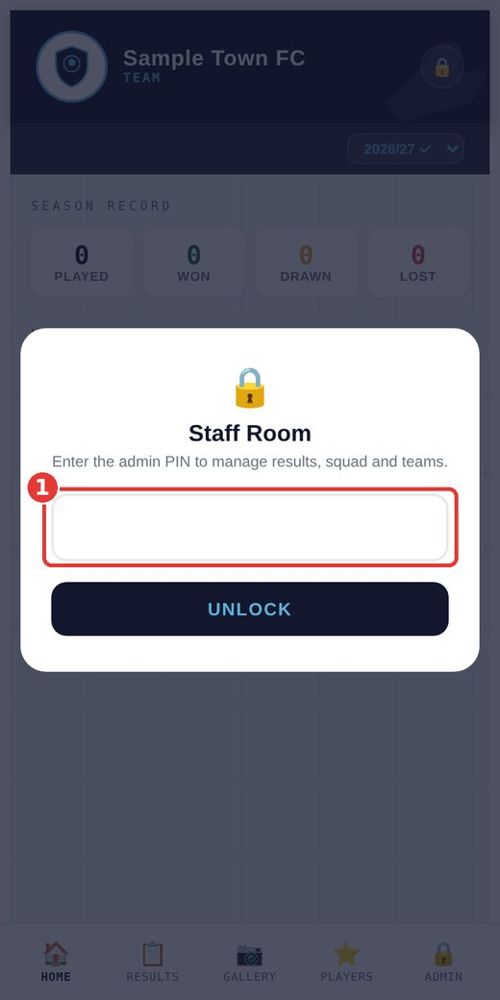

Log a result
Staff Room → Log a Result. Work down the screen from the top.
A. The game
- What kind of game? League, Cup, Tournament or Friendly. Tournament has its own screen where you also pick the stage (group stage, semi-final, final and so on).
- Which league or cup? Tap the competition. If it isn't listed, tap + New and type it once. It will be there next time.
- Date played. Pick the date of the match.
- Opposition. Tap the box and choose the team. If they aren't listed, choose Add "new team" to list.
- Opp score. Type the number of goals the other team scored. Your own score is worked out for you in the next steps.
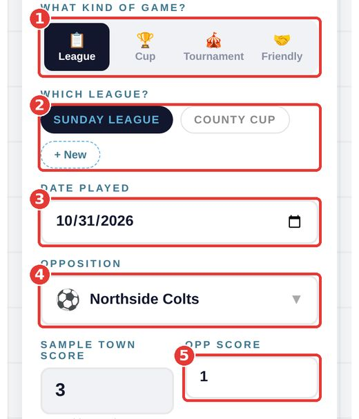
B. Who played
Tap the name of every player who played. They turn dark blue. Tap again to take someone off.
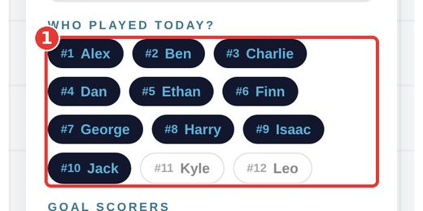
C. Goals
Under Goal scorers every player you picked has a counter. Tap + each time they scored (and − to take one off). Your team's score is added up from these, so it is always right.
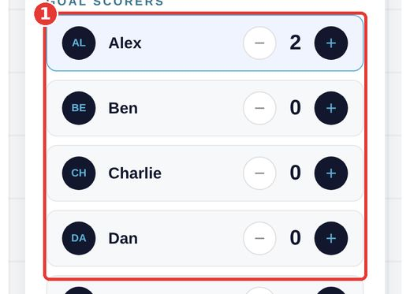
D. Awards and finish
- Man of the match. Tap the player your team picked.
- Opp. man of match. Tap the player the other team picked from your side, if they chose one. You can skip it.
- Tap Generate Result Card. The result is saved and your card appears.
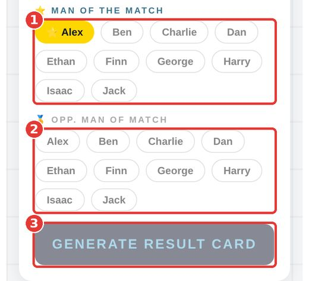
Fix a mistake, add photos or videos
Staff Room unlocked → Results tab → tap the match you want. The buttons and lists below appear:
- + Add (match photos) – choose photos from your phone. They also show in the Gallery.
- + Add video – paste a YouTube link, give it a title if you like and tap Save video. It shows in the Gallery under that match. Remove it with the Remove button beside it. Use "Unlisted" on YouTube if the video shouldn't be public.
- Edit – change the score, scorers, awards or opposition, then save.
- Delete – removes the match completely. The app asks you to confirm first.
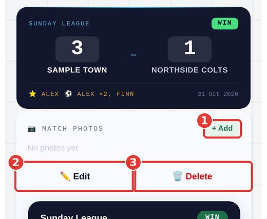
Look after the squad
Staff Room → Squad. Each player shows their squad number, appearances, goals and man of the match awards for the season.
- + Add Player – type a name and squad number. A photo is optional. Tap Add to squad.
- Active – tap this when a player leaves or stops playing. They move to an "Inactive" list and stop appearing when you log results, but their old stats are kept. Tap Restore to bring them back.
- Pencil – change a name, number or photo.
- Bin – removes the player for good (you'll be asked to confirm). Use Active/Restore instead unless you're sure.
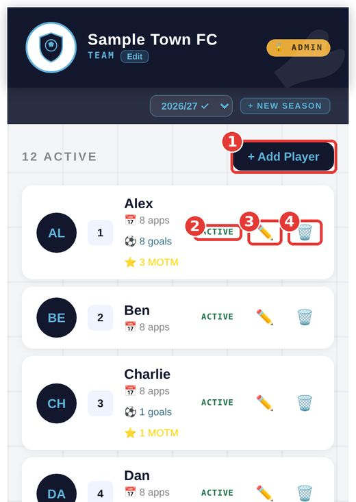
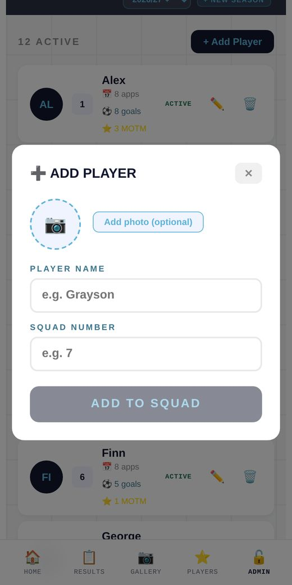
Opposition teams and badges
Staff Room → Teams lists every team you have played or added.
- Search – find a team quickly.
- Badge icon – tap it to upload that team's badge. It then shows on your result cards.
- H2H – head-to-head: every match you've played against that team and your record.
- + Add Team Manually – add a team before you have played them.
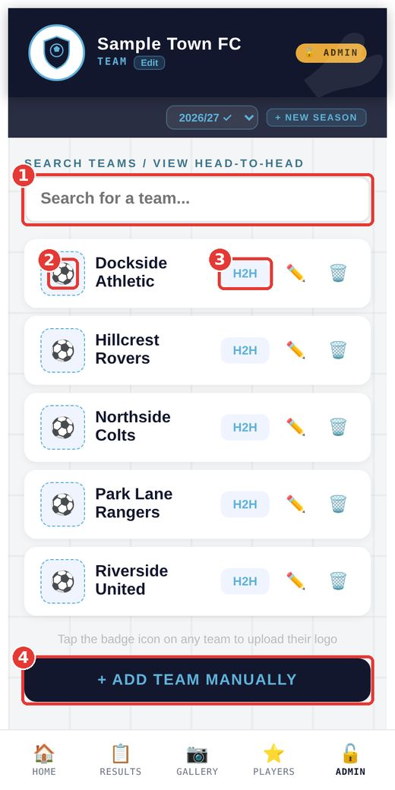
The pencil changes a team's name and the bin removes it. Use a photo or crest as a PNG or JPEG.
Season report
Staff Room → Report builds a one-page summary of the season: record, each competition, top scorers and your biggest win. Tap Save as image at the bottom to post it.
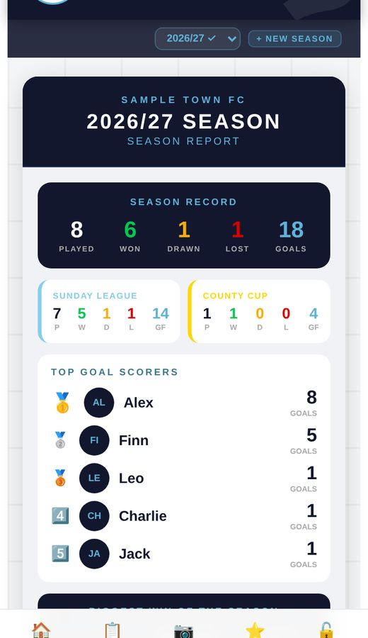
Start a new season
- With the Staff Room unlocked, tap + New Season at the top of the screen.
- Type the season name (for example 2027/28) and, if you like, the age group.
- Tap Start New Season.
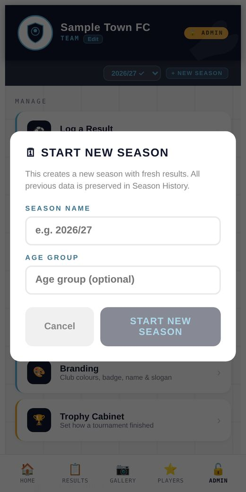
The new season starts with no results. Nothing is lost: last season's results, players' records and photos are kept. To look back, open the season drop-down at the top, or go to Staff Room → Season History and tap View → on a season.
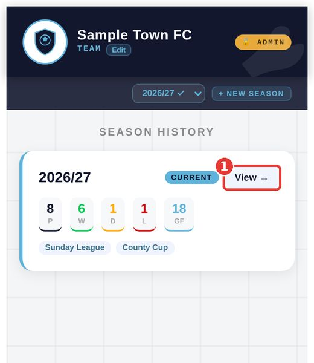
Trophy cabinet
After a tournament, go to Staff Room → Trophy Cabinet, find the tournament and tap how your team finished: Winners, Runners-up, 3rd Place, Semi-Final or Group Stage. Finishes are saved against that season and counted in your trophy tally.
You will only see tournaments in this list once you have logged results for them using the Tournament game type.
Your club's look, badge and PIN
Staff Room → Branding is where you set the club name, short name, slogan, colours and badge. Tap Save branding when you've finished and everyone sees the change.
- Upload badge – choose your crest (PNG or JPEG). It also becomes the icon on people's home screens for anyone who adds the app after that. Anyone who added it earlier needs to delete the icon and add it again to see the new one.
- Admin PIN – scroll down, type a new PIN of 4 to 8 digits and tap Change. Do this when someone who knew the PIN leaves.

Putting the app on a phone
- iPhone: open the link in Safari, tap the Share button, then Add to Home Screen.
- Android: open the link in Chrome, tap the three dots, then Install app or Add to Home screen.
Problems? Quick answers
| What's wrong | What to do |
|---|---|
| I forgot the PIN | Ask whoever set up the app for you. It can be reset, but it can't be looked up. |
| Generate Result Card is faded | The date, opposition or opponent's score is missing. |
| I can't find a player when logging a result | They may be set to Inactive. Go to Squad and tap Restore. Or they haven't been added yet. |
| I entered the wrong score or scorer | Results → tap the match → Edit. |
| A team is on the list twice | Go to Teams and remove the extra one with the bin. Your results are not affected. |
| My YouTube link is refused | Copy the link from YouTube's Share button and paste it in whole. Private videos won't play for other people. |
| A photo won't upload | Try a smaller picture. Use JPEG or PNG, not other file types. |
| My change isn't showing for someone else | Ask them to close the app completely and open it again. |
| The home-screen icon shows the wrong badge | Upload your badge in Branding, then delete the icon from the phone and add the app again. |
Who to contact: ____________________________
This guide describes the app as it works today. If something looks different on your phone, tell the person who set up the app for you.